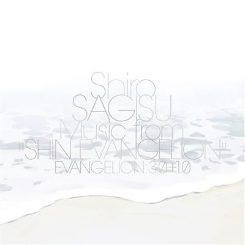
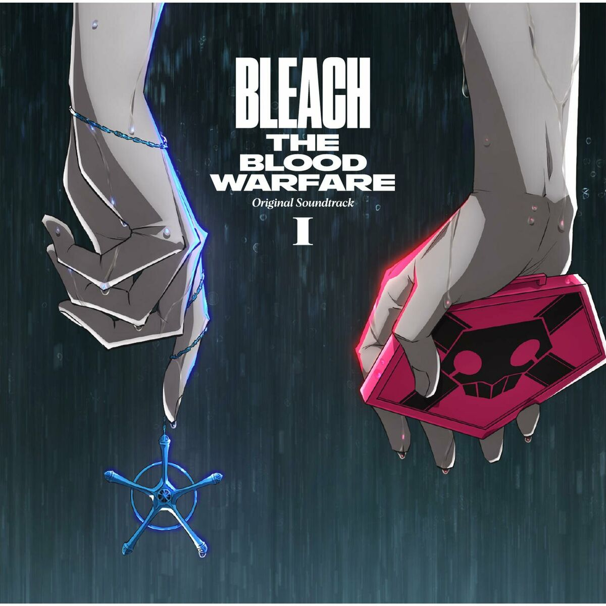

Shiro Sagisu
LE compositeur classique japonais de l’animation manga des années 2000. Il a marqué des générations avec les OST de Bleach et d’Evangelion.

Actualité
Actualité à intégrer
Discographie
 

Événements
Prochains événements et apparitions publiques.
Clips Vidéo
Galerie multimédia avec des photos et vidéos de sa carrière.